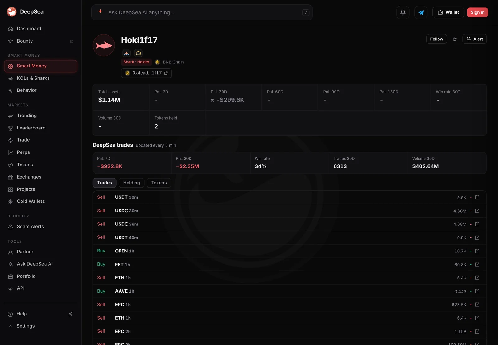
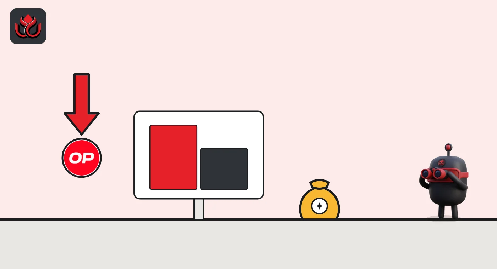

Sharks sold $3.64 million of OP in a day, $1.3 million more than they bought
DeepSea's 24-hour table puts Optimism's own token at the top of shark selling across every chain it tracks. OP is down 12.5% in a week on CoinGecko and 98% below its record.
Key points
- Shark wallets sold $3,643,011 of OP and bought $2,337,699 in the 24 hours to 12:47 a.m. ET on November 12, 2026, DeepSea's flow table shows: a net sale of $1,305,312.
- That was 65 trades by 11 wallets. In the last hour, 2 more trades sold $10,362 of OP and nobody bought.
- CoinGecko showed OP at $0.0961, down 3.4% in 24 hours, 12.5% in 7 days and 28.2% in 30 days.
 What DeepSea's data shows
What DeepSea's data shows
DeepSea's 24-hour flow table (built 12:47 a.m. ET) ranks OP, the token of the Optimism network, first on its shark selling list across all chains. Sharks are large, active wallets that DeepSea tracks. They sold $3,643,011 and bought $2,337,699, a net sale of $1,305,312.
That came from 65 trades by 11 wallets. The selling kept going after midnight: in the last hour, one wallet made 2 trades selling $10,362 of OP, with no buys.
The table does not split each wallet's trades by token. Across all tokens on Optimism, the biggest one-way seller was a wallet ending in 1f17: $1,360,091 sold in 2 trades, nothing bought. We cannot say from the table how much of that was OP. Its DeepSea page shows it down $922.8K over 7 days across chains.

Data: DeepSea (desea.io), checked November 12, 2026, 12:47 a.m. ET.
Same direction as last week
New to the tools? Read what DeepSea is.
On November 4, DeepSea's table showed sharks selling $3.55 million of OP in a day while buying $486,000. This time buyers took a larger share, but sellers still led by about $1.3 million.
Optimism sharks are also losing on closed trades. DeepSea's 7-day profit table has 22 Optimism shark wallets with closed trades: 3 in profit, minus $365,412 in all. Wallet 1f17 is down $57,899 on Optimism and more on other chains.
OP shark flows in 24 hours
US$ thousand
24 hours to 12:47 a.m. ET, November 12, 2026. Source: DeepSea live flows.
Price context
CoinGecko showed OP at $0.0961 at 12:48 a.m. ET, with a market value of about $220 million. It is down 3.4% in 24 hours, 12.5% in 7 days and 28.2% in 30 days. Its record high was $4.84 on March 6, 2024, so it trades about 98% below it. The day's shark selling equals about 1.7% of OP's market value.

Why it matters
This analysis uses data from DeepSea and CoinGecko. When the largest wallets on a network sell its own token for a second week, it adds supply to a falling market. The data shows the selling, not the reasons, and who controls the 11 wallets is unknown.
LC Insight analysis
This section is our reading of the facts above, not a statement of fact.
- We think the net figure matters more than the headline sales: $1.3 million net out of $6 million traded.
- With 19 of 22 Optimism sharks behind on the week, some selling may be traders cutting positions, but the data does not show motive.
- Sellers also led on November 4, so this is a second week of net shark selling in a token about 98% below its record.
What's next
- Whether OP holds near $0.096
- Whether shark buying on OP catches up with selling
- Moves by the wallet ending in 1f17
Disclaimer. This article is based on public information and the sources listed below as of the update time shown. It is for information only and is not investment, legal or tax advice. Figures may change as companies and authorities publish new data.
Sources
- DeepSea, live flows by token and wallet, 24 hours (read November 12, 2026, 12:47 a.m. ET)
- DeepSea, realized profit by wallet, 7 days (read November 12, 2026, 12:47 a.m. ET)
- DeepSea, wallet page for the address ending in 1f17 (read November 12, 2026, 12:58 a.m. ET)
- CoinGecko, Optimism (OP) price and history (read November 12, 2026, 12:48 a.m. ET)